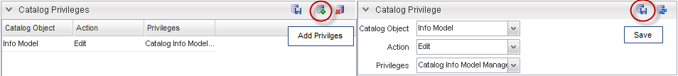

You can assign catalog privileges to a catalog object which will dictate the user access to that object. Catalog privileges are created and associated to groups of users in the System Administration application. Within the Catalog Designer application, the privilege is associated to a Catalog object and an action, resulting in a Catalog privilege definition that dictates the action a group of users can perform on a specific object. Within Catalog Designer, an object instance can be further restricted by the use of Catalog Domains.
In the User Profile Management application, the administrator can set up users, privileges and groups. In the Catalog application these privileges are associated to an object and dictates the right the user has to access (view, edit, or activate) that object.
The Catalog assumes that if privileges are not assigned to a particular Catalog Object, then all users have full access to that object. Once a privilege is assigned to an object, access to that object is limited to the users associated with that privilege. For example, for the object Item, if a privilege is not assigned to the Item object then all users have access to edit, view and activate items. However, once the a privilege is assigned to the Item object, then only the user group associated with that privilege will have access to the Items.
This section contains the steps required to define a privilege and associate the privilege to a user group.
In the User Profile Management, you can create users and groups. A user can be bound to a group which in turn can be bound to a privilege. Additional privileges can also be created in the User Profile Management application. The User Profile Management User Guide contains more information on privileges. This section describes the steps that bind the user to a privilege within the User Profile Management application.
The privileges create in the System Administration Application are defined in Catalog. It is in the Catalog application that the privilege is associated to an action and a Catalog object. A user associated with a certain privilege will have the ability to perform the action on the Catalog object defined for the privilege.
In the Catalog application, navigate to the Configuration menu and select the Catalog Configuration sub menu option. When the Catalog Privileges form appears, click the Add button.
|  |
| Field | Description |
|---|---|
| Catalog Object | Select the Catalog Object for which you want to set an action and privilege. These objects are system defined (refer to the list below). |
| Action | Select from View, Edit, Active. |
| Privileges | Select the privilege that you want to apply to the catalog object. Privileges are previously set in the System Administration Application. |
The Catalog Object fields contains a listing of system-defined objects:
The Privileges field contains the Catalog privileges defined in the User Profile Management application that include the following:
Notes: